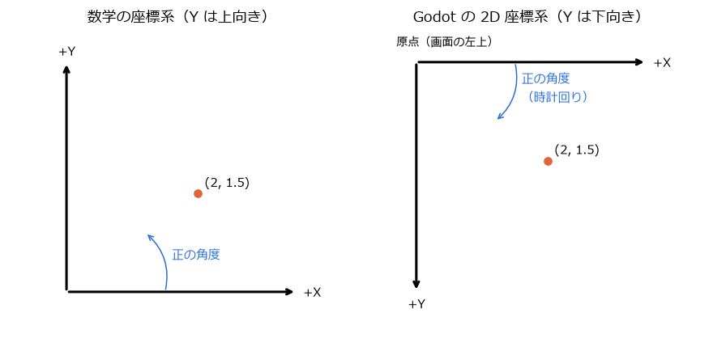
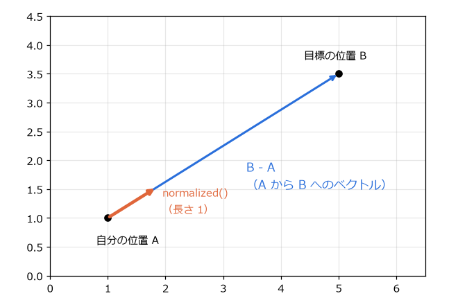
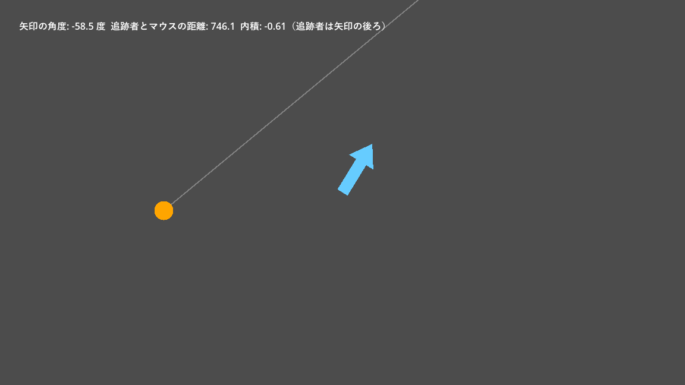

第 10 章 2D の座標とベクトル
ゲームでは、物体の位置、移動の向き、速さを常に計算している。これらを扱う道具がベクトルである。本章では、Godot の 2D 座標系と、ゲームでよく使うベクトルの計算を説明する。サンプルは chapter10 フォルダーにある。
2D の座標系
Godot の 2D の座標は、ピクセルを単位とする。座標系は、数学で習う座標系と次の点が異なる。
原点 (0, 0) は、画面の左上にある（カメラを使わない場合）。
X 軸は右向きが正である（数学と同じ）。
Y 軸は下向きが正である（数学と逆）。
回転の角度は、画面上で時計回りが正になる。角度の単位はラジアンである。


図 16 数学の座標系と Godot の 2D 座標系
Y 軸が下向きなのは、画面の左上から右下へ順に描画するコンピューターの画面の慣習に合わせているためである。そのため、ジャンプのように上へ動かすときは Y を減らし、重力で落とすときは Y を増やす。第 11 章 2D の物理と衝突 のプレイヤーのジャンプの初速が負の値になっているのはこのためである。
角度はラジアンで扱う。360 度が \(2\pi\) ラジアン（約 6.28）に相当する。度とラジアンの変換には、deg_to_rad() と rad_to_deg() を使う。定数 PI は \(\pi\)、TAU は \(2\pi\) である。
Vector2
2D の位置や速度は Vector2 型で表す。Vector2(3, 4) は、X 成分が 3、Y 成分が 4 のベクトルである。position や velocity などのプロパティも Vector2 である。
Vector2 には、よく使う向きを表す定数がある。
定数 |
値 |
画面上の向き |
|---|---|---|
|
(0, 0) |
なし |
|
(1, 0) |
右 |
|
(-1, 0) |
左 |
|
(0, -1) |
上 |
|
(0, 1) |
下 |
ベクトルの基本的な計算
足し算と掛け算
ベクトルどうしの足し算は、成分ごとの足し算である。位置に移動量を足すと、新しい位置になる。ベクトルに数（スカラー）を掛けると、向きを変えずに長さだけが変わる。
「速度 × 経過時間 = 移動量」なので、position += velocity * delta と書けば、1 フレーム分だけ物体が動く。
長さと正規化
ベクトル \(\mathbf{v} = (x, y)\) の長さ（大きさ）は、三平方の定理で求める。length() で取得できる。
ベクトルを自分の長さで割ると、向きが同じで長さが 1 のベクトル（単位ベクトル）になる。これを正規化と呼び、normalized() で求める。
単位ベクトルは「向き」だけを表す。これに速さを掛けると、決まった速さで決まった向きへ進む速度になる。
2 点の差
点 A から点 B へ向かうベクトルは、B - A で求める。その長さが 2 点間の距離、正規化したものが A から B への向きである。


図 17 A から B へのベクトルと、その正規化
1var to_target := target_position - position # 自分から目標へのベクトル
2var distance := to_target.length() # 目標までの距離
3var direction := to_target.normalized() # 目標への向き（長さ 1）
4position += direction * SPEED * delta # 目標へ向かって進む
direction_to() と distance_to() を使うと、同じ計算を 1 回の呼び出しで書ける。
メソッド |
内容 |
|---|---|
|
長さ |
|
長さを 1 にしたベクトル。長さ 0 のベクトルでは (0, 0) を返す。 |
|
点 b までの距離 |
|
点 b への向き（長さ 1） |
|
X 軸の正の向きからの角度（ラジアン） |
|
指定した角度だけ回転したベクトル |
|
ベクトル b との内積（後述） |
|
ベクトル b との間を割合 t で補間した値 |
|
b に向かって最大 delta だけ近づけた値。行き過ぎない。 |
|
長さが max を超えないように縮めたベクトル |
角度と回転
角度 \(\theta\) の向きを表す単位ベクトルは \((\cos\theta, \sin\theta)\) である。GDScript では Vector2.RIGHT.rotated(theta) または Vector2.from_angle(theta) で求められる。逆に、ベクトルの向きを角度にするには angle() を使う。
ノードを特定の点に向けるには、look_at(点) を使う。look_at() は、ノードの X 軸の正の向き（右向き）が目標を指すように回転させる。そのため、向きのある画像は、右向きに描いておくと扱いやすい。
内積
2 つのベクトルの内積は、次の式で定義される。\(\theta\) は 2 つのベクトルのなす角である。
両方が単位ベクトルなら、内積は \(\cos\theta\) になる。同じ向きなら 1、直角なら 0、反対向きなら -1 である。この性質を使うと、「敵がプレイヤーの前方にいるか（内積が正）」「視野の範囲内か（内積がある値より大きいか）」を、角度を計算せずに判定できる。
サンプル
vector_demo.tscn は、ここまでの計算を目で確かめるサンプルである。画面中央の矢印はマウスの方向を向き、オレンジの円（追跡者）はマウスに向かって一定の速さで進む。
1extends Node2D
2## ベクトルの基本演算を可視化するサンプル。
3## 矢印はマウスの方向を向き、追跡者（オレンジの円）はマウスに向かって一定の速さで進む。
4
5const CHASER_SPEED: float = 150.0
6
7var _chaser_position := Vector2(100, 500)
8
9@onready var _arrow: Node2D = $Arrow
10@onready var _info: Label = $Info
11
12
13func _process(delta: float) -> void:
14 var mouse := get_global_mouse_position()
15
16 # 矢印をマウスの方向へ向ける。look_at() はノードの +X 方向を目標へ向ける。
17 _arrow.look_at(mouse)
18
19 # 追跡者からマウスへのベクトル = 目標の位置 - 自分の位置
20 var to_mouse := mouse - _chaser_position
21 if to_mouse.length() > 5.0:
22 # normalized() で長さを 1 にしてから速さを掛ける。
23 _chaser_position += to_mouse.normalized() * CHASER_SPEED * delta
24
25 # 矢印の正面の向きと「矢印から追跡者への向き」の内積で、追跡者が矢印の前にいるかを判定する。
26 var forward := Vector2.RIGHT.rotated(_arrow.rotation)
27 var dot := forward.dot(_arrow.position.direction_to(_chaser_position))
28 var side := "前" if dot > 0.0 else "後ろ"
29 _info.text = (
30 "矢印の角度: %.1f 度 追跡者とマウスの距離: %.1f 内積: %.2f（追跡者は矢印の%s）"
31 % [rad_to_deg(_arrow.rotation), to_mouse.length(), dot, side]
32 )
33 queue_redraw()
34
35
36func _draw() -> void:
37 draw_line(_chaser_position, get_global_mouse_position(), Color(1, 1, 1, 0.3), 2.0)
38 draw_circle(_chaser_position, 16.0, Color.ORANGE)


図 18 vector_demo.tscn の実行結果
画面上部には、矢印の角度、追跡者とマウスの距離、矢印の正面の向きと「矢印から追跡者への向き」の内積が表示される。マウスを動かして矢印の向きを変えると、追跡者が矢印の前にいるときは内積が正、後ろにいるときは負になることを確かめられる。
ローカル座標とグローバル座標
第 5 章 ノードとシーン で説明したように、子ノードの位置は親ノードからの相対値で表される。ノードの position は親から見た座標（ローカル座標）で、global_position はゲームの世界の原点から見た座標（グローバル座標）である。
名前 |
内容 |
|---|---|
|
親ノードから見た位置 |
|
ゲームの世界での位置 |
|
親ノードから見た回転、世界での回転（ラジアン） |
|
拡大率。 |
|
このノードのローカル座標の点を、グローバル座標に変換する。 |
|
グローバル座標の点を、このノードのローカル座標に変換する。 |
位置、回転、拡大率をまとめたものをトランスフォーム（transform）と呼び、2D では Transform2D 型で表す。Transform2D は、ノードの X 軸と Y 軸の向き（回転と拡大率を含む）と、原点の位置を持つ。親子関係があるノードのグローバルなトランスフォームは、親から順にトランスフォームを掛け合わせて求める。通常は global_position などのプロパティを使えば足り、Transform2D を直接計算する必要はあまりない。
異なる親を持つノードどうしの位置を比べるときは、必ずグローバル座標を使う。例えば、敵とプレイヤーの距離を求めるなら enemy.global_position.distance_to(player.global_position) と書く。